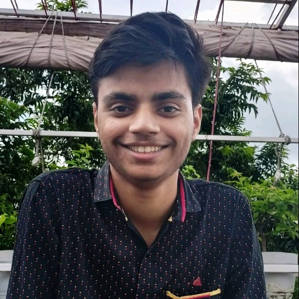
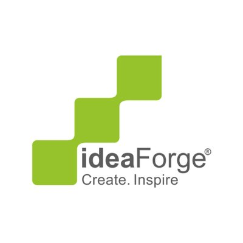
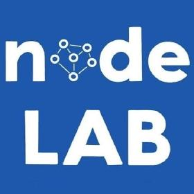
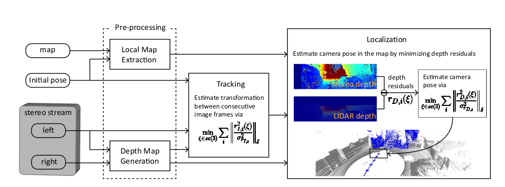
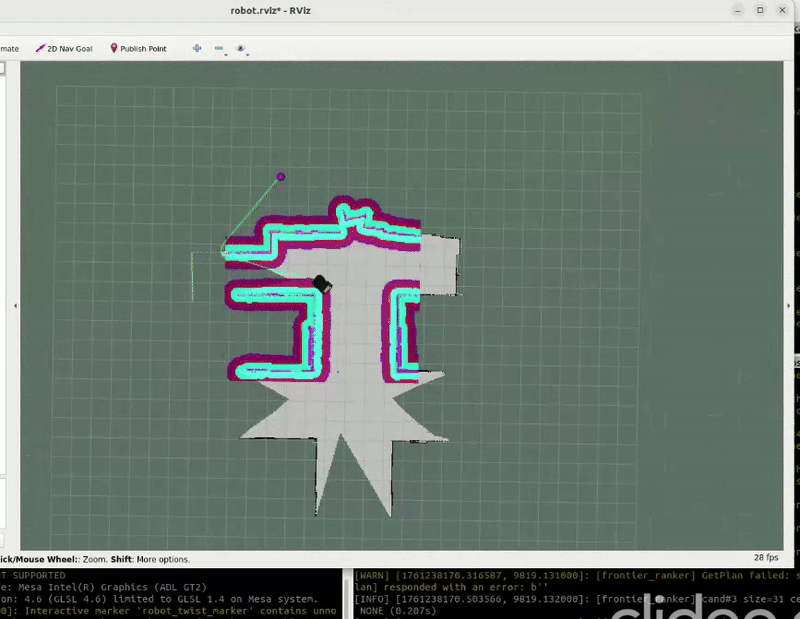

|  |
|
{kind=link}
|
I am a R&D Perception Engineer at ideaForge Technology Limited where I work on developing software for drones trying to achieve GPS-Denied Navigation. I recieved my Bachelors from the Department of Chemical Engineering, IIT Kharagpur, pursuing my B.Tech in Chemical Engineering. My research interests lie in state estimation and 3D Computer Vision, and I am specifically interested in increasing the robustness and generalisation capabiliteies of learning-based methods with the help of classical methods. In my solo free time apart from the usual movies, I love to play drums. Feel free to check out my resume and drop me an e-mail if you want to chat with me! Would always love to know more about you. |
|
Apr '25 |
Started working in the Perception Team at ideaForge Technology Limited. |
|
Jul '24 |
Joined Tiger Analytics after college which was my corporate experience, worked on LLMs integration for IT helpdesk automation. |
|
Oct '23 |
Started working under Prof. Soumyajit Dey, IITKGP for my Bachelor's Thesis on mapping and localisation in unknown environments using frontier exploration. |
|
May '23 |
Started my MITACS Globalink Internship at the University of Alberta under Prof. Ehsan Hashemi. |
|
Feb '23 |
Won 1st place at the Inter IIT Tech Meet 2023 in the event Drona Pluto Drone Swarm Challenge. |
|
Sep' 22 |
UVRSABI was inaugurated by Dr. S Velmurugan at IDMS 2022 for deployment in Telangana, India. |
|
Jun '22 |
Our work UVRSABI got selected as a spotlight paper in the CVCIE Workshop at ECCV. |
|
Apr '22 |
Started my internship at Robotics Research Centre (RRC), IIIT Hyderabad under the supervision of Prof. Ravi Kiran on UAV-based Assessment of Civil Structures. |
|
Mar '21 |
Joined the Autonomous Ground Vehicle Research Group as SLAM team member. |
|
Nov '20 |
Started my undergrad at IIT Kharagpur! |
|

|
Apr '25 - Present Working on developing softwares for drones in GNSS-limited environments. My work involved enhanching the navigation stack by introducing multi-map capabilites wherein I developed extensive GPS-VO policies for different real-world scenarios which increased our navigation uptime by around 30% in GPS-denied conditions. I also made our stack crash-averse by introducing map reuse feature wherein we restore the SLAM state before the crash and start a fresh session with the restored data. |
|
|
Jul '24 - Mar' 25 Worked on developing GenAI-based solution to automate IT Helpdesk operations by leveraging state-of-the-art LLM models for ticket resolution. |
|

|
Jun '23 - Aug' 23 Worked under the supervision of Prof. Ehsan Hashemi on developing visual-based human and indoor object detection capabilites for mobile robots. My work involved data collection using the indoor Husky platform and developing a low latency visual-odometry object tracking module for precise localisation of the dynamic obstacles around the robot. [Report] |
|
|
May '22 - Sep' 22 Worked under the supervision of Prof. Ravi Kiran and Prof. Harikumar Kandath on developing a software library that helps in estimating the key structural parameters for seismic risk assessment using visual remote sensing data. My work involved proposing and implementing a novel method for estimating the distance between two adjacent building using the sparse 3D pointclouds. I also developed a large scale image stitching algorithm which was used downstream by the segmentation module to identify the non-structrucal elements on the rooftop and the area estimates related to it. This work was accepted at the CVCIE Workshop, ECCV 2022. |
|
|
Mar '21 - Apr' 24 Worked under the supervision of Prof. Debashish Chakravarty as a Mechatronics and SLAM team member during my undergraduate at IIT Kharagpur. I worked on developing algorithms for Stereo-Camera based localisation in pre-mapped LiDAR environments. I also participated in various international competitions like University Rover Challenge (URC) and F1TENTH Autonomous Grand Prix and also led junior members in various research projects and competitions. |

|
Published in CVCIE Workshop, ECCV 2022 We automate the inspection of buildings through UAV-based image data collection and a post-processing module to infer and quantify the details which helps in avoiding manual inspection, reducing the time and cost. We introduced a novel method to estimate the distance between adjacent buildings and structures. We developed an architecture that can be used to segment roof tops in case of both orthogonal and non-orthogonal view using a state-of-the-art semantic segmentation model. Taking into consideration the importance of civil inspection of buildings we introduced a software library that helps in estimating the key structural parameters. |

|
[challenge] Member of the IIT Kharagpur - IUPUI, Indiana - USB Colombia collaborative team. Designed tightly/loosely coupled high-speed localisation in for racecar localisation in pre-mapped LiDAR circuit. The localisation was using 3 static-state LiDARs. [code] Developed a ROS-based sensor testing module as part of the Base Vehicle Software team. [code] |

|
[GitHub] [Website] We needed to achieve high speed navigation for virtual sim racing as a part of F1TENTH at ICRA 2022. Our team developed a LiDAR-based autonomous racing stack tuned to minimize the lap times and handle corners and obstacles smoothly. We also developed a reactive obstacle avoidance algorithm and integrated it with PID controller to achieve 3rd out of the 40 participating teams. |

|
[GitHub] Co-organised by IIT Kanpur and Drona Aviation, as part of the Inter IIT Tech Meet 11.0. This challenge aimed to develop a vision based state feedback control for an indoor multi-drone system handling socket communication with the flight controller without the use of ROS. Being a core team menber, I played a pivotal role in developing state estimation algorithms using depth camera feed and markers. We used a adaptive PID controller which received the current pose estimate on basis of precise detection of Aruco Tag using our vision module. Our team secured the first place. |
|

|
[blog][code] We attempt to explore how we can efficiently exploit stereocameras in premapped LiDAR environments to get the best of both worlds - a low-cost relocalization solution in an HD map. Skills: Photometric residual minimization, heterogenous relocalization, Ceres Solver |
|

|
[GitHub] As part of my Bachelor’s thesis, I developed planning and navigation algorithms for mobile robots operating in unknown environments. I designed a custom frontier-ranking method to prioritize exploration targets and integrated it with the ROS navigation stack, leveraging gmapping for online SLAM and move_base for path planning and control. This system enables a robot to autonomously explore unfamiliar spaces by continuously alternating between mapping, frontier selection, and goal-directed navigation. |
This template is a modification to Jon Barron's website.